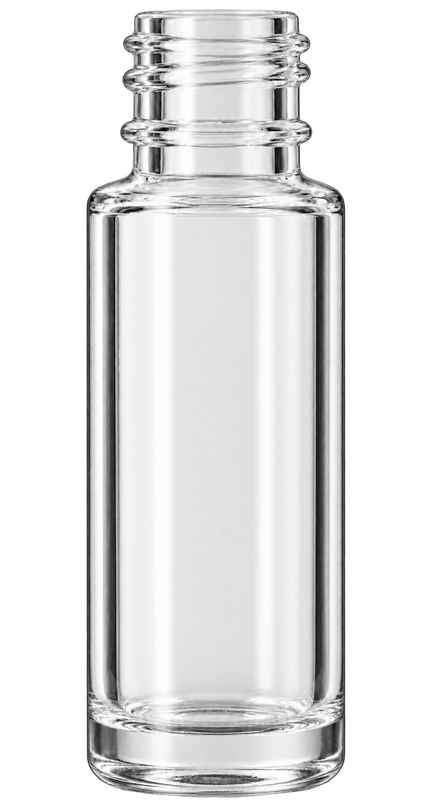
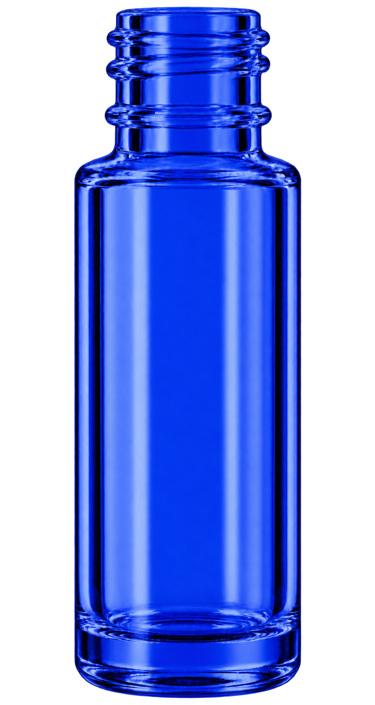
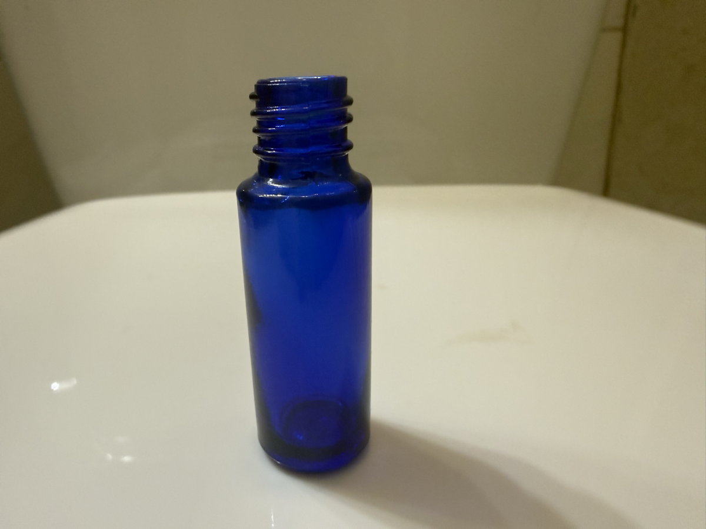

Best Bottles / 5 ml Cylinder / Local review
Clear and cobalt, revised threads.
The latest GPT candidates use two shallow upper thread turns and a separate lower neck bead, guided by your physical bottle photo. The intended reuse covers 71 existing cap, roller and sprayer SKUs.
Revised candidates. Component-fit approval is still pending.
The first pair was rejected for its threads and narrow proportions. These replacements bring the body and thread-width ratios within about 0.3% of the measured targets. Check the thread close-ups below before reusing them across the 71 component SKUs.
Equal visible height · Original image proportions · No stretching
Cobalt blue
From revised clear · v3Inspect the threads
Two shallow upper spiral turns, then a separate lower neck bead. Compare with the actual bottle photograph.
Clear · revised neck

Cobalt · revised neck

Your physical bottle reference

The photo is used for neck construction. Its tilted camera angle is not the catalog viewpoint.
Compare with the current measured bodies
These are the current Blender v19 masters, shown at the same visible height for comparison. This enlarged review view is separate from the catalog sizing stage.
Current clear · Blender v19
Current cobalt · Blender v19
Shape and component rollout checks
| Check | Result |
|---|---|
| Measured target | 53.23 mm height · 17.45 mm body · 12.60 mm external thread diameter |
| Viewpoint and orientation | Front view, upright; no cap or hardware baked into either body |
| Outline registration | Coarse ratios pass: body and thread-width error below 0.3%; shoulder, seat, thread profile and edge quality still need visual validation |
| Exterior transparency | Present; full-resolution edge artifacts still need cleanup |
| Cap, roller and sprayer fit | Pending full anchor and component-state checks; no new candidate fit approval |
| Dip tube through glass | Needs its own optical treatment and visual check; alpha does not calculate refraction |
| 71 component SKUs and builder | Reuse inventory prepared; candidate replacement pending |
Image measurements use an alpha threshold and equal-height registration to detect gross drift. They do not certify manufacturer dimensions. The generator did not expose a specific model identifier.